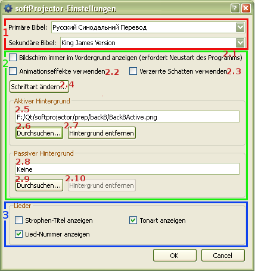

5.1 Programm-Einstellungen

1. Bibel-Einstellungen:
Diese Einstellungen beeinflußen nur die Arbeit mit den Bibeln. Ausführlicher
hier.
2. Allgemeine Einstellungen:
Diese Einstellungen beeinflußen die Arbeit mit dem ganzem Programm.
-
- Bei Aktivierung wird das Fenster des Bildschirms immer überlappend über den anderen Fenstern sein. Die Fenstern aller anderen Programmen werden "unter" dem Fenster des Bildschirms des softProjectors sein. Wenn softProjector von PowerPoint oder einem anderen Programm genutzt wird, lassen Sie diese Option unaktiviert. Damit diese Option in Kraft treten kann, muss softProjector neu gestartet werden.
- Bei Aktivierung wird der Übergang von einem Bild zum anderen verblassend sein.
- Für ein besseres Lesen auf einem hellen Hintergrund, erscheint der Text mit einem Schatten.
- Schriftart, Größe und Schriftschnitt des Textes, der auf der Leinwand erscheint.
- Hier wird ein Hintergrundbild für den Text gewählt. In dem Fenster befindet sich ein Weg zur Bild-Datei; das Bild kann nicht manuell geändert werden.
- Durchsuchen und Auswahl eines Hintergrund-Bildes.
- Hintergrund-Bild wird gelöscht. Es erscheint ein schwarzer Hintergrund.
- Der Hintergrund erscheint auf der Leinwand ohne Text. Er erscheint auch beim Drücken "Verstecken".
- Durchsuchen und Auswahl des passiven Hintergrunds.
- Der passiver Hintergrund wird entfernt. Es erscheint ein schwarzer Hintergrund.
3. Lied-Einstellung:
Diese Einstellungen beeinflußen nur die Arbeit mit den Liedern. Siehe
hier.